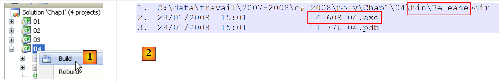
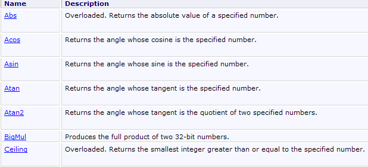
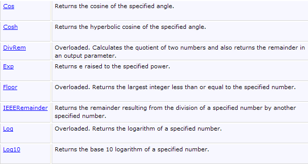

3. Les bases du langage C#
3.1. Introduction
Nous traitons C# d'abord comme un langage de programmation classique. Nous aborderons les classes ultérieurement. Dans un programme on trouve deux choses :
- des données
- les instructions qui les manipulent On s'efforce généralement de séparer les données des instructions :
 |
3.2. Les données de C#
C# utilise les types de données suivants:
- les nombres entiers
- les nombres réels
- les nombres décimaux
- les caractères et chaînes de caractères
- les booléens
- les objets
3.2.1. Les types de données prédéfinis
Type C# | Type .NET | Donnée représentée | Suffixe des valeurs littérales | Codage | Domaine de valeurs | ||
Char (S) | caractère | 2 octets | caractère Unicode (UTF-16) | ||||
String (C) | chaîne de caractères | référence sur une séquence de caractères Unicode | |||||
Int32 (S) | nombre entier | 4 octets | [-231, 231-1] [–2147483648, 2147483647] | ||||
UInt32 (S) | .. | U | 4 octets | [0, 232-1] [0, 4294967295] | |||
Int64 (S) | .. | L | 8 octets | [-263, 263 -1] [–9223372036854775808, 9223372036854775807] | |||
UInt64 (S) | .. | UL | 8 octets | [0, 264 -1] [0, 18446744073709551615] | |||
.. | 1 octet | [-27 , 27 -1] [-128,+127] | |||||
Byte (S) | .. | 1 octet | [0 , 28 -1] [0,255] | ||||
Int16 (S) | .. | 2 octets | [-215, 215-1] [-32768, 32767] | ||||
UInt16 (S) | .. | 2 octets | [0, 216-1] [0,65535] | ||||
Single (S) | nombre réel | F | 4 octets | [1.5 10-45, 3.4 10+38] en valeur absolue | |||
Double (S) | .. | D | 8 octets | [-1.7 10+308, 1.7 10+308] en valeur absolue | |||
Decimal (S) | nombre décimal | M | 16 octets | [1.0 10-28,7.9 10+28] en valeur absolue avec 28 chiffres significatifs | |||
Boolean (S) | .. | 1 octet | true, false | ||||
Object (C) | référence d'objet | référence d'objet |
Ci-dessus, on a mis en face des types C#, leur type .NET équivalent avec le commentaire (S) si ce type est une structure et (C) si le type est une classe. On découvre qu'il y a deux types possibles pour un entier sur 32 bits : int et Int32. Le type int est un type C#. Int32 est une structure appartenant à l'espace de noms System. Son nom complet est ainsi System.Int32. Le type int est un alias C# qui désigne la structure .NET System.Int32. De même, le type C# string est un alias pour le type .NET System.String. System.String est une classe et non une structure. Les deux notions sont proches avec cependant la différence fondamentale suivante :
- une variable de type Structure se manipule via sa valeur
- une variable de type Classe se manipule via son adresse (référence en langage objet). Une structure comme une classe sont des types complexes ayant des attributs et des méthodes. Ainsi, on pourra écrire :
Ci-dessus le littéral 3 est par défaut de type C# int, donc de type .NET System.Int32. Cette structure a une méthode GetType() qui rend un objet encapsulant les caractéristiques du type de données System.Int32. Parmi celles-ci, la propriété FullName rend le nom complet du type. On voit donc que le littéral 3 est un objet plus complexe qu'il n'y paraît à première vue.
Voici un programme illustrant ces différents points :
- ligne 7 : déclaration d'un entier ent
- ligne 19 : le type d'une variable v peut être obtenue par v.GetType().FullName. La taille d'une structure S peut être obtenue par sizeof(S). L'instruction Console.WriteLine("... {0} ... {1} ...",param0, param1, ...) écrit à l'écran, le texte qui est son premier paramètre, en remplaçant chaque notation {i} par la valeur de l'expression parami.
- ligne 22 : le type string désignant une classe et non une structure, on ne peut utiliser l'opérateur sizeof. Voici le résultat de l'exécution :
L'affichage produit les types .NET et non les alias C#.
3.2.2. Notation des données littérales
145, -7, 0xFF (hexadécimal) | |||
100000L | |||
134.789, -45E-18 (-45 10-18) | |||
134.789F, -45E-18F (-45 10-18) | |||
100000M | |||
'A', 'b' | |||
"aujourd'hui" "c:\\chap1\\paragraph3" @"c:\chap1\paragraph3" | |||
true, false | |||
new DateTime(1954,10,13) (an, mois, jour) pour le 13/10/1954 |
3.2.3. Déclaration des données
3.2.3.1. Rôle des déclarations
Un programme manipule des données caractérisées par un nom et un type. Ces données sont stockées en mémoire. Au moment de la traduction du programme, le compilateur affecte à chaque donnée un emplacement en mémoire caractérisé par une adresse et une taille. Il le fait en s'aidant des déclarations faites par le programmeur.
Par ailleurs celles-ci permettent au compilateur de détecter des erreurs de programmation. Ainsi l'opération
x=x*2;
sera déclarée erronée si x est une chaîne de caractères par exemple.
3.2.3.2. Déclaration des constantes
La syntaxe de déclaration d'une constante est la suivante :
Par exemple :
Pourquoi déclarer des constantes ?
-
La lecture du programme sera plus aisée si l'on a donné à la constante un nom significatif :
-
La modification du programme sera plus aisée si la "constante" vient à changer. Ainsi dans le cas précédent, si le taux de tva passe à 33%, la seule modification à faire sera de modifier l'instruction définissant sa valeur :
Si l'on avait utilisé 0.186 explicitement dans le programme, ce serait alors de nombreuses instructions qu'il faudrait modifier.
3.2.3.3. Déclaration des variables
Une variable est identifiée par un nom et se rapporte à un type de données. C# fait la différence entre majuscules et minuscules. Ainsi les variables FIN et fin sont différentes.
Les variables peuvent être initialisées lors de leur déclaration. La syntaxe de déclaration d'une ou plusieurs variables est :
où Identificateur_de_type est un type prédéfini ou bien un type défini par le programmeur. De façon facultative, une variable peut être initialisée en même temps que déclarée.
On peut également ne pas préciser le type exact d'une variable en utilisant le mot clé var en lieu et place de Identificateur_de_type :
Le mot clé var ne veut pas dire que les variables n'ont pas un type précis. La variable variablei a le type de la donnée valeuri qui lui est affectée. L'initialisation est ici obligatoire afin que le compilateur puisse en déduire le type de la variable.
Voici un exemple :
- ligne 6 : une donnée typée explicitement
- ligne 7 : (donnée).GetType().Name est le nom court de (donnée), (donnée).GetType().FullName est le nom complet de (donnée)
- ligne 8 : une donnée typée implicitement. Parce que 3 est de type int, j sera de type int.
- ligne 10 : une donnée typée implicitement. Parce que DateTime.Now est de type DateTime, aujourdhui sera de type DateTime. A l'exécution, on obtient le résultat suivant :
Une variable typée implicitement par le mot clé var ne peut pas ensuite changer de type. Ainsi, on ne pourrait écrire après la ligne 10 du code, la ligne :
Nous verrons ultérieurement qu'il est possible de déclarer un type "à la volée" dans une expression. C'est alors un type anonyme, un type auquel l'utilisateur n'a pas donné de nom. C'est le compilateur qui donnera un nom à ce nouveau type. Si une donnée de type anonyme doit être affectée à une variable, la seule façon de déclarer celle-ci est d'utiliser le mot clé var.
3.2.4. Les conversions entre nombres et chaînes de caractères
nombre.ToString() | |||
int.Parse(chaine) ou System.Int32.Parse | |||
long.Parse(chaine) ou System.Int64.Parse | |||
double.Parse(chaîne) ou System.Double.Parse(chaîne) | |||
float.Parse(chaîne) ou System.Float.Parse(chaîne) |
La conversion d'une chaîne vers un nombre peut échouer si la chaîne ne représente pas un nombre valide. Il y a alors génération d'une erreur fatale appelée exception. Cette erreur peut être gérée par la clause try/catch suivante :
Si la fonction ne génère pas d'exception, on passe alors à instruction suivante, sinon on passe dans le corps de la clause catch puis à instruction suivante. Nous reviendrons ultérieurement sur la gestion des exceptions. Voici un programme présentant quelques techniques de conversion entre nombres et chaînes de caractères. Dans cet exemple la fonction affiche écrit à l'écran la valeur de son paramètre. Ainsi affiche(S) écrit la valeur de S à l'écran où S est de type string.
Lignes 30-32, on gère l'éventuelle exception qui peut se produire. e.Message est le message d'erreur lié à l'exception e.
Les résultats obtenus sont les suivants :
On remarquera que les nombres réels sous forme de chaîne de caractères doivent utiliser la virgule et non le point décimal. Ainsi on écrira
mais
3.2.5. Les tableaux de données
Un tableau C# est un objet permettant de rassembler sous un même identificateur des données de même type. Sa déclaration est la suivante :
n est le nombre de données que peut contenir le tableau. La syntaxe Tableau[i] désigne la donnée n° i où i appartient à l'intervalle [0,n-1]. Toute référence à la donnée Tableau[i] où i n'appartient pas à l'intervalle [0,n-1] provoquera une exception. Un tableau peut être initialisé en même temps que déclaré :
ou plus simplement :
Les tableaux ont une propriété Length qui est le nombre d'éléments du tableau.
Un tableau à deux dimensions pourra être déclaré comme suit :
Type[,] tableau=new Type[n,m];
où n est le nombre de lignes, m le nombre de colonnes. La syntaxe Tableau[i,j] désigne l'élément j de la ligne i de tableau. Le tableau à deux dimensions peut lui aussi être initialisé en même temps qu'il est déclaré :
ou plus simplement :
Le nombre d'éléments dans chacune des dimensions peut être obtenue par la méthode GetLength(i) où i=0 représente la dimension correspondant au 1er indice, i=1 la dimension correspondant au 2ième indice, …
Le nombre total de dimensions est obtenu avec la propriété Rank, le nombre total d'éléments avec la propriété Length.
Un tableau de tableaux est déclaré comme suit :
Type[][] tableau=new Type[n][];
La déclaration ci-dessus crée un tableau de n lignes. Chaque élément tableau[i] est une référence de tableau à une dimension. Ces références tableau[i] ne sont pas initialisées lors de la déclaration ci-dessus. Elles ont pour valeur la référence null.
L'exemple ci-dessous illustre la création d'un tableau de tableaux :
- ligne 2 : un tableau noms de 3 éléments de type string[][]. Chaque élément est un pointeur de tableau (une référence d'objet) dont les éléments sont de type string[].
- lignes 3-5 : les 3 éléments du tableau noms sont initialisés. Chacun "pointe" désormais sur un tableau d'éléments de type string[]. noms[i][j] est l'élément j du tableau de type string [] référencé par noms[i].
- ligne 9 : initialisation de l'éélment noms[i][j] à l'intérieur d'une double boucle. Ici noms[i] est un tableau de i+1 éléments. Comme noms[i] est un tableau, noms[i].Length est son nombre d'éléments. Voici un exemple regroupant les trois types de tableaux que nous venons de présenter :
A l'exécution, nous obtenons les résultats suivants :
3.3. Les instructions élémentaires de C#
On distingue
1 les instructions élémentaires exécutées par l'ordinateur.
2 les instructions de contrôle du déroulement du programme.
Les instructions élémentaires apparaissent clairement lorsqu'on considère la structure d'un micro-ordinateur et de ses périphériques.
 |
-
lecture d'informations provenant du clavier
-
traitement d'informations
-
écriture d'informations à l'écran
3.3.1. Ecriture sur écran
Il existe différentes instructions d'écriture à l'écran :
où expression est tout type de donnée qui puisse être converti en chaîne de caractères pour être affiché à l'écran. Tous les objets de C# ou .NET ont une méthode ToString() qui est utilisée pour faire cette conversion.
La classe System.Console donne accès aux opérations d'écriture écran (Write, WriteLine). La classe Console a deux propriétés Out et Error qui sont des flux d'écriture de type TextWriter :
- Console.WriteLine() est équivalent à Console.Out.WriteLine() et écrit sur le flux Out associé habituellement à l'écran.
- Console.Error.WriteLine() écrit sur le flux Error, habituellement associé lui aussi à l'écran. Les flux Out et Error peuvent être redirigés vers des fichiers texte au moment de l'exécution du programme comme nous le verrons prochainement.
3.3.2. Lecture de données tapées au clavier
Le flux de données provenant du clavier est désigné par l'objet Console.In de type TextReader. Ce type d'objets permet de lire une ligne de texte avec la méthode ReadLine :
La classe Console offre une méthode ReadLine associée par défaut au flux In. On peut donc écrire écrire :
La ligne tapée au clavier est rangée dans la variable ligne et peut ensuite être exploitée par le programme. Le flux In peut être redirigé vers un fichier, comme les flux Out et Error.
3.3.3. Exemple d'entrées-sorties
Voici un court programme d'illustration des opérations d'entrées-sorties clavier/écran :
- ligne 9 : obj est une référence d'objet
- ligne 10 : obj est écrit à l'écran. Par défaut, c'est la méthode obj.ToString() qui est appelée.
- ligne 14 : on peut aussi écrire :
Le 1er paramètre "i={0}" est le format d'affichage, les autres paramètres, les expressions à afficher. Les éléments {n} sont des paramètres "positionnels". A l'exécution, le paramètre {n} est remplacé par la valeur de l'expression n° n.
Le résultat de l'exécution est le suivant :
- ligne 1 : l'affichage produit par la ligne 10 du code. La méthode obj.ToString() a affiché le nom du type de la variable obj : System.Object. Le type object est un alias C# du type .NET System.Object.
3.3.4. Redirection des E/S
Il existe sous DOS et UNIX trois périphériques standard appelés :
- périphérique d'entrée standard - désigne par défaut le clavier et porte le n° 0
- périphérique de sortie standard - désigne par défaut l'écran et porte le n° 1
- périphérique d'erreur standard - désigne par défaut l'écran et porte le n° 2 En C#, le flux d'écriture Console.Out écrit sur le périphérique 1, le flux d'écriture Console.Error écrit sur le périphérique 2 et le flux de lecture Console.In lit les données provenant du périphérique 0.
Lorsqu'on lance un programme sous Dos ou Unix, on peut fixer quels seront les périphériques 0, 1 et 2 pour le programme exécuté. Considérons la ligne de commande suivante :
Derrière les arguments argi du programme pg, on peut rediriger les périphériques d'E/S standard vers des fichiers:
le flux d'entrée standard n° 0 est redirigé vers le fichier in.txt. Dans le programme le flux Console.In prendra donc ses données dans le fichier in.txt. | |||
redirige la sortie n° 1 vers le fichier out.txt. Cela entraîne que dans le programme le flux Console.Out écrira ses données dans le fichier out.txt | |||
idem, mais les données écrites sont ajoutées au contenu actuel du fichier out.txt. | |||
redirige la sortie n° 2 vers le fichier error.txt. Cela entraîne que dans le programme le flux Console.Error écrira ses données dans le fichier error.txt | |||
idem, mais les données écrites sont ajoutées au contenu actuel du fichier error.txt. | |||
Les périphériques 1 et 2 sont tous les deux redirigés vers des fichiers |
On notera que pour rediriger les flux d'E/S du programme pg vers des fichiers, le programme pg n'a pas besoin d'être modifié. C'est le système d'exploitation qui fixe la nature des périphériques 0,1 et 2. Considérons le programme suivant :
Générons l'exécutable de ce code source :
 |
- en [1] : l'exécutable est créé par clic droit sur le projet / Build
- en [2] : dans une fenêtre Dos, l'exécutable 04.exe a été créé dans le dossier bin/Release du projet. Emettons les commandes suivantes dans la fenêtre Dos [2] :
- ligne 1 : on met la chaîne test dans le fichier in.txt
- lignes 2-3 : on affiche le contenu du fichier in.txt pour vérification
- ligne 4 : exécution du programme 04.exe. Le flux In est redirigé vers le fichier in.txt, le flux Out vers le fichier out.txt, le flux Error vers le fichier err.txt. L'exécution ne provoque aucun affichage.
- lignes 5-6 : contenu du fichier out.txt. Ce contenu nous montre que :
- le fichier in.txt a été lu
- l'affichage écran a été redirigé vers out.txt
- lignes 7-8 : vérification analogue pour le fichier err.txt On voit clairement que les flux Out et In n'écrivent pas sur les mêmes périphériques puisqu'on a pu les rediriger séparément.
3.3.5. Affectation de la valeur d'une expression à une variable
On s'intéresse ici à l'opération variable=expression;
L'expression peut être de type : arithmétique, relationnelle, booléenne, caractères
3.3.5.1. Interprétation de l'opération d'affectation
L'opération variable=expression;
est elle-même une expression dont l'évaluation se déroule de la façon suivante :
- la partie droite de l'affectation est évaluée : le résultat est une valeur V.
- la valeur V est affectée à la variable
- la valeur V est aussi la valeur de l'affectation vue cette fois en tant qu'expression. C'est ainsi que l'opération
est légale. A cause de la priorité, c'est l'opérateur = le plus à droite qui va être évalué. On a donc
L'expression V2=expression est évaluée et a pour valeur V. L'évaluation de cette expression a provoqué l'affectation de V à V2. L'opérateur = suivant est alors évalué sous la forme :
La valeur de cette expression est encore V. Son évaluation provoque l'affectation de V à V1.
Ainsi donc, l'opération V1=V2=expression
est une expression dont l'évaluation
1 provoque l'affectation de la valeur de expression aux variables V1 et V2
2 rend comme résultat la valeur de expression.
On peut généraliser à une expression du type :
3.3.5.2. Expression arithmétique
Les opérateurs des expressions arithmétiques sont les suivants :
-
addition
-
soustraction
* multiplication
/ division : le résultat est le quotient exact si l'un au moins des opérandes est réel. Si les deux opérandes sont entiers le résultat est le quotient entier. Ainsi 5/2 -> 2 et 5.0/2 ->2.5.
% division : le résultat est le reste quelque soit la nature des opérandes, le quotient étant lui entier. C'est donc l'opération modulo.
Il existe diverses fonctions mathématiques. En voici quelques-unes :
racine carrée | |||
Cosinus | |||
Sinus | |||
Tangente | |||
x à la puissance y (x>0) | |||
Exponentielle | |||
Logarithme népérien | |||
valeur absolue |
etc...
Toutes ces fonctions sont définies dans une classe C# appelée Math. Lorsqu'on les utilise, il faut les préfixer avec le nom de la classe où elles sont définies. Ainsi on écrira :
La définition complète de la classe Math est la suivante :




3.3.5.3. Priorités dans l'évaluation des expressions arithmétiques
La priorité des opérateurs lors de l'évaluation d'une expression arithmétique est la suivante (du plus prioritaire au moins prioritaire) :
Les opérateurs d'un même bloc [ ] ont même priorité.
3.3.5.4. Expressions relationnelles
Les opérateurs sont les suivants :
priorités des opérateurs
Le résultat d'une expression relationnelle est le booléen false si expression est fausse, true sinon.
Comparaison de deux caractères
Soient deux caractères C1 et C2. Il est possible de les comparer avec les opérateurs
Ce sont alors leurs codes Unicode, qui sont des nombres, qui sont alors comparés. Selon l'ordre Unicode on a les relations suivantes :
Comparaison de deux chaînes de caractères
Elles sont comparées caractère par caractère. La première inégalité rencontrée entre deux caractères induit une inégalité de même sens sur les chaînes.
Exemples :
Soit à comparer les chaînes "Chat" et "Chien"
 |
Cette dernière inégalité permet de dire que "Chat" < "Chien".
Soit à comparer les chaînes "Chat" et "Chaton". Il y a égalité tout le temps jusqu'à épuisement de la chaîne "Chat". Dans ce cas, la chaîne épuisée est déclarée la plus "petite". On a donc la relation
Fonctions de comparaison de deux chaînes
On peut utiliser les opérateurs relationnels == et != pour tester l'égalité ou non de deux chaînes, ou bien la méthode Equals de la classe System.String. Pour les relations < <= > >=, il faut utiliser la méthode CompareTo de la classe System.String :
Ligne 7, la variable i aura la valeur :
1 2 3 4 5 | |
Ligne 8, la variable egal aura la valeur true si les deux chaînes sont égales, false sinon. Ligne 10, on utilise les opérateurs == et != pour vérifier l'égalité ou non de deux chaînes.
Les résultats de l'exécution :
3.3.5.5. Expressions booléennes
Les opérateurs utilisables sont AND (&&) OR(||) NOT (!). Le résultat d'une expression booléenne est un booléen.
priorités des opérateurs :
- !
- &&
- ||
Les opérateurs relationnels ont priorité sur les opérateurs && et ||.
3.3.5.6. Traitement de bits
Les opérateurs
Soient i et j deux entiers.
décale i de n bits sur la gauche. Les bits entrants sont des zéros. | |||
décale i de n bits sur la droite. Si i est un entier signé (signed char, int, long) le bit de signe est préservé. | |||
fait le ET logique de i et j bit à bit. | |||
fait le OU logique de i et j bit à bit. | |||
complémente i à 1 | |||
fait le OU EXCLUSIF de i et j |
Soit le code suivant :
- le format {0:x4} affiche le paramètre n° 0 au format hexadécimal (x) avec 4 caractères (4). Les résultats de l'exécution sont les suivants :
3.3.5.7. Combinaison d'opérateurs
1 2 3 | |
Il en est de même avec les opérateurs /, %,* ,<<, >>, &, |, ^. Ainsi a=a/2; peut s'écrire a/=2;
3.3.5.8. Opérateurs d'incrémentation et de décrémentation
La notation variable++ signifie variable=variable+1 ou encore variable+=1
La notation variable-- signifie variable=variable-1 ou encore variable-=1.
3.3.5.9. L'opérateur ternaire ?
L'expression
est évaluée de la façon suivante :
1 l'expression expr_cond est évaluée. C'est une expression conditionnelle à valeur vrai ou faux
2 Si elle est vraie, la valeur de l'expression est celle de expr1 et expr2 n'est pas évaluée.
3 Si elle est fausse, c'est l'inverse qui se produit : la valeur de l'expression est celle de expr2 et expr1 n'est pas évaluée.
L'opération i=(j>4 ? j+1:j-1); affectera à la variable i : j+1 si j>4, j-1 sinon. C'est la même chose que d'écrire if(j>4) i=j+1; else i=j-1; mais c'est plus concis.
3.3.5.10. Priorité générale des opérateurs
gd | |||
dg | |||
dg | |||
gd | |||
gd | |||
gd | |||
gd | |||
gd | |||
gd | |||
gd | |||
gd | |||
gd | |||
gd | |||
dg | |||
dg |
gd indique qu'a priorité égale, c'est la priorité gauche-droite qui est observée. Cela signifie que lorsque dans une expression, l'on a des opérateurs de même priorité, c'est l'opérateur le plus à gauche dans l'expression qui est évalué en premier. dg indique une priorité droite-gauche.
3.3.5.11. Les changements de type
Il est possible, dans une expression, de changer momentanément le codage d'une valeur. On appelle cela changer le type d'une donnée ou en anglais type casting. La syntaxe du changement du type d'une valeur dans une expression est la suivante:
La valeur prend alors le type indiqué. Cela entraîne un changement de codage de la valeur.
- ligne 7, f1 aura la valeur 0.0. La division 3/4 est une division entière puisque les deux opérandes sont de type int.
- ligne 8, (float)i est la valeur de i transformée en float. Maintenant, on a une division entre un réel de type float et un entier de type int. C'est la division entre nombres réels qui est alors faite. La valeur de j sera elle également transformée en type float, puis la division des deux réels sera faite. f2 aura alors la valeur 0,75. Voici les résultats de l'exécution :
Dans l'opération (float)i :
- i est une valeur codée de façon exacte sur 2 octets
- (float) i est la même valeur codée de façon approchée en réel sur 4 octets Il y a donc transcodage de la valeur de i. Ce transcodage n'a lieu que le temps d'un calcul, la variable i conservant toujours son type int.
3.4. Les instructions de contrôle du déroulement du programme
3.4.1. Arrêt
La méthode Exit définie dans la classe Environment permet d'arrêter l'exécution d'un programme.
Exit provoque la fin du processus en cours et rend la main au processus appelant. La valeur de status peut être utilisée par celui-ci. Sous DOS, cette variable status est rendue dans la variable système ERRORLEVEL dont la valeur peut être testée dans un fichier batch. Sous Unix, avec l'interpréteur de commandes Shell Bourne, c'est la variable $? qui récupère la valeur de status.
arrêtera l'exécution du programme avec une valeur d'état à 0.
3.4.2. Structure de choix simple
notes:
- la condition est entourée de parenthèses.
- chaque action est terminée par point-virgule.
- les accolades ne sont pas terminées par point-virgule.
- les accolades ne sont nécessaires que s'il y a plus d'une action.
- la clause else peut être absente.
- il n'y a pas de clause then. L'équivalent algorithmique de cette structure est la structure si .. alors … sinon :
 |
exemple
On peut imbriquer les structures de choix :
Se pose parfois le problème suivant :
Dans l'exemple précédent, le else de la ligne 10 se rapporte à quel if ? La règle est qu'un else se rapporte toujours au if le plus proche : if(n>6), ligne 8, dans l'exemple. Considérons un autre exemple :
Ici nous voulions mettre un else au if(n2>1) et pas de else au if(n2>6). A cause de la remarque précédente, nous sommes obligés de mettre des accolades au if(n2>1) {...} else ...
3.4.3. Structure de cas
La syntaxe est la suivante :
notes
- la valeur de l'expression de contrôle du switch peut être un entier, un caractère, une chaîne de caractères
- l'expression de contrôle est entourée de parenthèses.
- la clause default peut être absente.
- les valeurs vi sont des valeurs possibles de l'expression. Si l'expression a pour valeur vi , les actions derrière la clause case vi sont exécutées.
- l'instruction break fait sortir de la structure de cas.
- chaque bloc d'instructions lié à une valeur vi doit se terminer par une instruction de branchement (break, goto, return, ...) sinon le compilateur signale une erreur. exemple
En algorithmique
En C#
3.4.4. Structures de répétition
3.4.4.1. Nombre de répétitions connu
Structure for
La syntaxe est la suivante :
Notes
- les 3 arguments du for sont à l'intérieur d'une parenthèse et séparés par des points-virgules.
- chaque action du for est terminée par un point-virgule.
- l'accolade n'est nécessaire que s'il y a plus d'une action.
- l'accolade n'est pas suivie de point-virgule. L'équivalent algorithmique est la structure pour :
qu'on peut traduire par une structure tantque :
Structure foreach
La syntaxe est la suivante :
Notes
- collection est une collection d'objets énumérable. La collection d'objets énumérable que nous connaissons déjà est le tableau
- Type est le type des objets de la collection. Pour un tableau, ce serait le type des éléments du tableau
- variable est une variable locale à la boucle qui va prendre successivement pour valeur, toutes les valeurs de la collection. Ainsi le code suivant :
afficherait :
3.4.4.2. Nombre de répétitions inconnu
Il existe de nombreuses structures en C# pour ce cas.
Structure tantque (while)** **
On boucle tant que la condition est vérifiée. La boucle peut ne jamais être exécutée.
notes:
- la condition est entourée de parenthèses.
- chaque action est terminée par point-virgule.
- l'accolade n'est nécessaire que s'il y a plus d'une action.
- l'accolade n'est pas suivie de point-virgule. La structure algorithmique correspondante est la structure tantque :
Structure répéter jusqu'à (do while)
La syntaxe est la suivante :
On boucle jusqu'à ce que la condition devienne fausse. Ici la boucle est faite au moins une fois.
notes
- la condition est entourée de parenthèses.
- chaque action est terminée par point-virgule.
- l'accolade n'est nécessaire que s'il y a plus d'une action.
- l'accolade n'est pas suivie de point-virgule. La structure algorithmique correspondante est la structure répéter … jusqu'à :
Structure pour générale (for)
La syntaxe est la suivante :
On boucle tant que la condition est vraie (évaluée avant chaque tour de boucle). Instructions_départ sont effectuées avant d'entrer dans la boucle pour la première fois. Instructions_fin_boucle sont exécutées après chaque tour de boucle.
notes
- les différentes instructions dans instructions_depart et instructions_fin_boucle sont séparées par des virgules. La structure algorithmique correspondante est la suivante :
Exemples
Les fragments de code suivants calculent tous la somme des 10 premiers nombres entiers.
3.4.4.3. Instructions de gestion de boucle
fait sortir de la boucle for, while, do ... while. | |||
fait passer à l'itération suivante des boucles for, while, do ... while |
3.5. La gestion des exceptions
De nombreuses fonctions C# sont susceptibles de générer des exceptions, c'est à dire des erreurs. Lorsqu'une fonction est susceptible de générer une exception, le programmeur devrait la gérer dans le but d'obtenir des programmes plus résistants aux erreurs : il faut toujours éviter le "plantage" sauvage d'une application.
La gestion d'une exception se fait selon le schéma suivant :
Si la fonction ne génère pas d'exception, on passe alors à instruction suivante, sinon on passe dans le corps de la clause catch puis à instruction suivante. Notons les points suivants :
-
e est un objet de type Exception ou dérivé. On peut être plus précis en utilisant des types tels que IndexOutOfRangeException, FormatException, SystemException, etc… : il existe plusieurs types d'exceptions. En écrivant catch (Exception e), on indique qu'on veut gérer toutes les types d'exceptions. Si le code de la clause try est susceptible de générer plusieurs types d'exceptions, on peut vouloir être plus précis en gérant l'exception avec plusieurs clauses catch :
-
On peut ajouter aux clauses try/catch, une clause finally :
Qu'il y ait exception ou pas, le code de la clause finally sera toujours exécuté.
- Dans la clause catch, on peut ne pas vouloir utiliser l'objet Exception disponible. Au lieu d'écrire catch (Exception e){..}, on écrit alors catch(Exception){...} ou plus simplement catch {...}.
-
La classe Exception a une propriété Message qui est un message détaillant l'erreur qui s'est produite. Ainsi si on veut afficher celui-ci, on écrira :
-
La classe Exception a une méthode ToString qui rend une chaîne de caractères indiquant le type de l'exception ainsi que la valeur de la propriété Message. On pourra ainsi écrire :
On peut écrire aussi :
Le compilateur va attribuer au paramètre {0}, la valeur ex.ToString().
L'exemple suivant montre une exception générée par l'utilisation d'un élément de tableau inexistant :
Ci-dessus, la ligne 18 va générer une exception parce que le tableau tab n'a pas d'élément n° 100. L'exécution du programme donne les résultats suivants :
- ligne 9 : l'exception [System.IndexOutOfRangeException] s'est produite
- ligne 11 : la clause finally (lignes 23-25) du code a été exécutée, alors même que ligne 21, on avait une instruction return pour sortir de la méthode. On retiendra que la clause finally est toujours exécutée. Voici un autre exemple où on gère l'exception provoquée par l'affectation d'une chaîne de caractères à un variable de type entier lorsque la chaîne ne représente pas un nombre entier :
- lignes 15-27 : la boucle de saisie de l'âge d'une personne
- ligne 20 : la ligne tapée au clavier est transformée en nombre entier par la méthode int.Parse. Cette méthode lance une exception si la conversion n'est pas possible. C'est pourquoi, l'opération a été placée dans un try / catch.
- lignes 22-23 : si une exception est lancée, on va dans le catch où rien n'est fait. Ainsi, le booléen ageOK positionné à false, ligne 14, va-t-il rester à false.
- ligne 21 : si on arrive à cette ligne, c'est que la conversion string -> int a réussi. On vérifie cependant que l'entier obtenu est bien supérieur ou égal à 1.
- lignes 24-26 : un message d'erreur est émis si l'âge est incorrect. Quelques résultats d'exécution :
3.6. Application exemple - V1
On se propose d'écrire un programme permettant de calculer l'impôt d'un contribuable. On se place dans le cas simplifié d'un contribuable n'ayant que son seul salaire à déclarer (chiffres 2004 pour revenus 2003) :
- on calcule le nombre de parts du salarié nbParts=nbEnfants/2 +1 s'il n'est pas marié, nbEnfants/2+2 s'il est marié, où nbEnfants est son nombre d'enfants.
- s'il a au moins trois enfants, il a une demi part de plus
- on calcule son revenu imposable R=0.72*S où S est son salaire annuel
- on calcule son coefficient familial QF=R/nbParts
- on calcule son impôt I. Considérons le tableau suivant :
4262 | 0 | 0 |
8382 | 0.0683 | 291.09 |
14753 | 0.1914 | 1322.92 |
23888 | 0.2826 | 2668.39 |
38868 | 0.3738 | 4846.98 |
47932 | 0.4262 | 6883.66 |
0 | 0.4809 | 9505.54 |
Chaque ligne a 3 champs. Pour calculer l'impôt I, on recherche la première ligne où QF<=champ1. Par exemple, si QF=5000 on trouvera la ligne
L'impôt I est alors égal à 0.0683*R - 291.09*nbParts. Si QF est tel que la relation QF<=champ1 n'est jamais vérifiée, alors ce sont les coefficients de la dernière ligne qui sont utilisés. Ici :
1 | |
ce qui donne l'impôt I=0.4809*R - 9505.54*nbParts.
Le programme C# correspondant est le suivant :
- lignes 7-9 : les valeurs numériques sont suffixées par M (Money) pour qu'elles soient de type decimal.
- ligne 16 :
- Console.ReadLine() rend la chaîne C1 tapée au clavier
- C1.Trim() enlève les espaces de début et fin de C1 - rend une chaîne C2
- C2.ToLower() rend la chaîne C3 qui est la chaîne C2 transformée en minuscules.
- ligne 21 : le booléen marie reçoit la valeur true ou false de la relation reponse=="o"
- ligne 29 : la chaîne tapée au clavier est transformée en type int. Si la transformation échoue, une exception est lancée.
- ligne 30 : le booléen OK reçoit la valeur true ou false de la relation nbEnfants>=0
- lignes 55-56 : on ne peut écrire simplement nbEnfants/2. Si nbEnfants était égal à 3, on aurait 3/2, une division entière qui donnerait 1 et non 1.5. Aussi, écrit-on (decimal)nbEnfants pour rendre réel l'un des opérandes de la division et avoir ainsi une division entre réels. Voici des exemples d'exécution :
3.7. Arguments du programme principal
La fonction principale Main peut admettre comme paramètre un tableau de chaînes : String[] (ou string[]). Ce tableau contient les arguments de la ligne de commande utilisée pour lancer l'application. Ainsi si on lance le programme P avec la commande (Dos) suivante :
et si la fonction Main est déclarée comme suit :
on aura args[0]="arg0", args[1]="arg1" … Voici un exemple :
Pour passer des arguments au code exécuté, on procèdera comme suit :
 |
- en [1] : clic droit sur le projet / Properties
- en [2] : onglet [Debug]
- en [3] : mettre les arguments L'exécution donne les résultats suivants :
On notera que la signature
est valide si la fonction Main n'attend pas de paramètres.
3.8. Les énumérations
Une énumération est un type de données dont le domaine de valeurs est un ensemble de constantes entières. Considérons un programme qui a à gérer des mentions à un examen. Il y en aurait cinq : Passable,AssezBien,Bien,TrèsBien, Excellent.
On pourrait alors définir une énumération pour ces cinq constantes :
De façon interne, ces cinq constantes sont codées par des entiers consécutifs commençant par 0 pour la première constante, 1 pour la suivante, etc... Une variable peut être déclarée comme prenant ces valeurs dans l'énumération :
On peut comparer une variable aux différentes valeurs possibles de l'énumération :
On peut obtenir toutes les valeurs de l'énumération :
De la même façon que le type simple int est équivalent à la structure System.Int32, le type simple enum est équivalent à la structure System.Enum. Cette structure a une méthode statique GetValues qui permet d'obtenir toutes les valeurs d'un type énuméré que l'on passe en paramètre. Celui-ci doit être un objet de type Type qui est une classe d'informations sur le type d'une donnée. Le type d'une variable v est obtenu par v.GetType(). Le type d'un type T est obtenu par typeof(T). Donc ici maMention.GetType() donne l'objet Type de l'énumération Mentions et Enum.GetValues(maMention.GetType()) la liste des valeurs de l'énumération Mentions.
Si on écrit maintenant
Ligne 2, la variable de boucle est de type entier. On obtient alors la liste des valeurs de l'énumération sous forme d'entiers. L'objet de type System.Type correspondant au type de données Mentions est obtenu par typeof(Mentions). On aurait pu écrire comme précédemment, maMention.GetType().
Le programme suivant met en lumière ce qui vient d'être écrit :
Les résultats d'exécution sont les suivants :
3.9. Passage de paramètres à une fonction
Nous nous intéressons ici au mode de passage des paramètres d'une fonction. Considérons la fonction statique suivante :
Dans la définition de la fonction, ligne1, a est appelé un paramètre formel. Il n'est là que pour les besoins de la définition de la fonction changeInt. Il aurait tout aussi bien pu s'appeler b. Considérons maintenant une utilisation de cette fonction :
Ici dans l'instruction de la ligne 3, ChangeInt(age), age est le paramètre effectif qui va transmettre sa valeur au paramètre formel a. Nous nous intéressons à la façon dont un paramètre formel récupère la valeur d'un paramètre effectif.
3.9.1. Passage par valeur
L'exemple suivant nous montre que les paramètres d'une fonction sont par défaut passés par valeur, c'est à dire que la valeur du paramètre effectif est recopiée dans le paramètre formel correspondant. On a deux entités distinctes. Si la fonction modifie le paramètre formel, le paramètre effectif n'est lui en rien modifié.
Les résultats obtenus sont les suivants :
La valeur 20 du paramètre effectif age a été recopiée dans le paramètre formel a (ligne 10). Celui-ci a été ensuite modifié (ligne 11). Le paramètre effectif est lui resté inchangé. Ce mode de passage convient aux paramètres d'entrée d'une fonction.
3.9.2. Passage par référence
Dans un passage par référence, le paramètre effectif et le paramètre formel sont une seule et même entité. Si la fonction modifie le paramètre formel, le paramètre effectif est lui aussi modifié. En C#, ils doivent être tous deux précédés du mot clé ref :
Voici un exemple :
et les résultats d'exécution :
Le paramètre effectif a suivi la modification du paramètre formel. Ce mode de passage convient aux paramètres de sortie d'une fonction.
3.9.3. Passage par référence avec le mot clé out
Considérons l'exemple précédent dans lequel la variable age2 ne serait pas initialisée avant l'appel à la fonction changeInt :
Lorsqu'on compile ce programme, on a une erreur :
On peut contourner l'obstacle en affectant une valeur initiale à age2. On peut aussi remplacer le mot clé ref par le mot clé out. On exprime alors que la paramètre est uniquement un paramètre de sortie et n'a donc pas besoin de valeur initiale :
Les résultats de l'exécution sont les suivants :